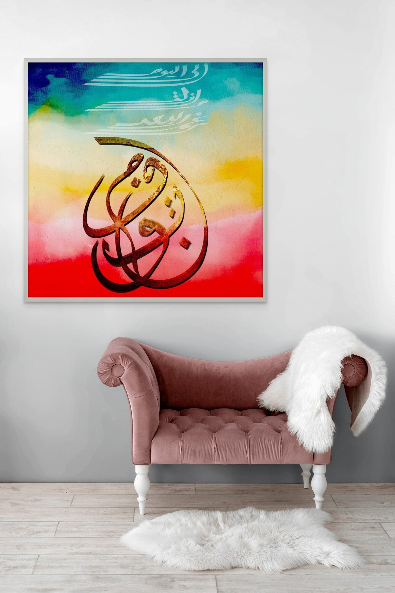
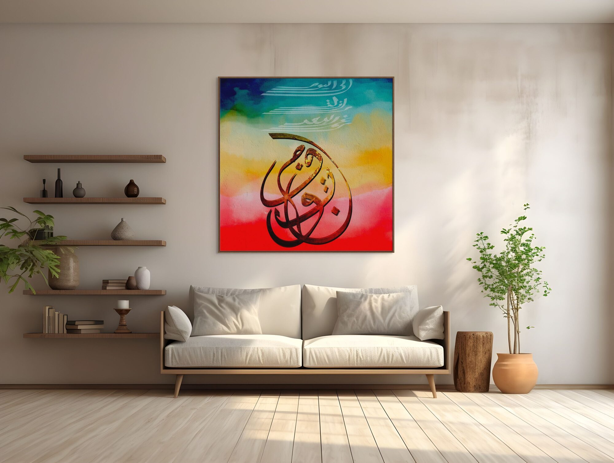
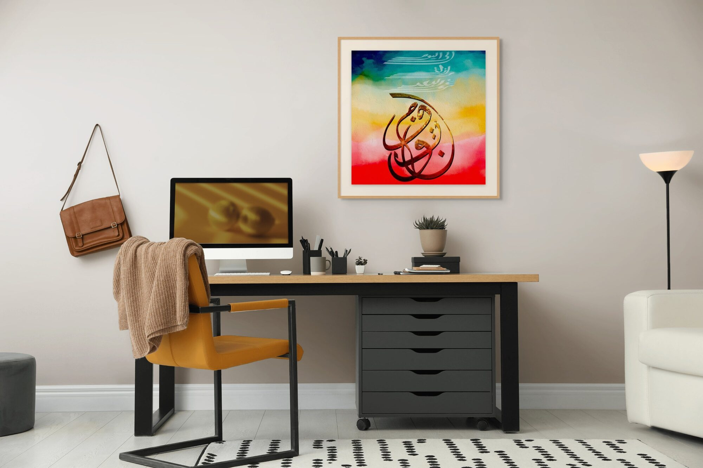
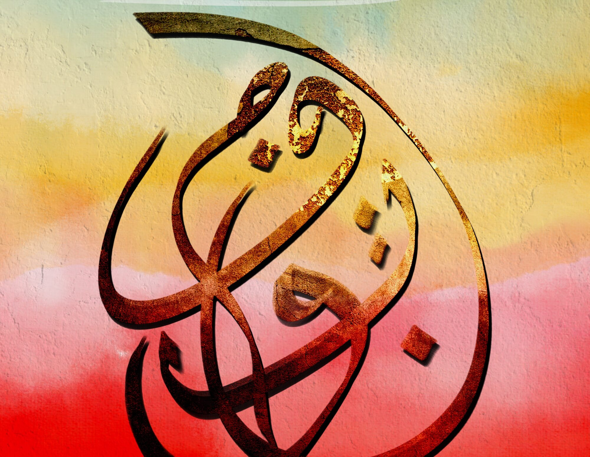

إلى اليوم ما زلت رغم البعد مفتون
To this day, I remain — despite the distance — enchanted.
رؤيا · Vision

Some distances never close. They only deepen.
Vision is a confession that time and geography cannot cure — the kind of longing that doesn't diminish with years but settles into the body, becoming part of how you carry yourself through the world.
The central form — dense, interlocking, almost sculptural — renders the word مفتون (enchanted, captivated, spellbound) as something that cannot be untangled. The letters spiral inward and outward simultaneously, the way obsession does. Gold leaf fractures across the surface, suggesting something precious that has weathered — not broken, but burnished by endurance.
Above the form, three ghosted lines drift like half-remembered breath: إلى اليوم — ما زلت — رغم البعد. They rise into the blue like smoke, barely there, the way a verse lives in your throat long after the moment has passed.
The ground moves from deep cobalt through teal, sun-yellow, blush, and into burning red — a full arc of feeling, a whole sky compressed into a single field. This is not decoration. It is the emotional temperature of the poem made visible.




Ask about رؤيا
Editions are small and made after the conversation. Tell me the format you have in mind and the wall it is going to.
Enquire about this work